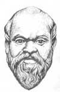

Sorgulanmayan hayat, hayat sayılmaz.
— Sokrat
Atina’nın usta öğretmeni Sokrat (MÖ 470-399), antik Yunan filozoflarından oluşan son derece önemli bir nesil yetiştirmiştir. Günümüzde tarihin en etkili düşünürleri arasında yer almaktadır. Entelektüel bir kışkırtıcı olarak Atinalılarla sürekli olarak politika ve ahlak konularında sürtüşmeler yaşamış, onları inançlarını yeniden gözden geçirmeye teşvik etmiştir.

Büyük öğretmenin bitmek bilmeyen mücadelesi en sonunda kendi başına bela olmuştur. 71 yaşındayken şehir yöneticilerine hakaret ettiği gerekçesiyle tutuklanmış ve tarihin belki de en meşhur davasında yargılanmıştır. En sonunda baldıran zehiri içerek intihar etmeye zorlanmıştır.
Bu kadar büyük bir etkiye sahip olmasına rağmen Sokrat hiçbir şey yazmamıştır. Onu dünyaya tanıtan eski bir öğrencisi olan Platon (MÖ 429-347) olmuştur. Platon, Sokrat öldüğü sırada otuz yaşlarındaydı. Aslına bakılırsa Sokrat’ın hayatı ile ilgili bilgiler büyük ölçüde eksiktir. Öyle ki tarihçiler filozofun hayatı hakkındaki belirsizliği “Sokratik Problem” olarak tanımlamaktadırlar.
Sokrat Atina’nın Perikles’in (MÖ 495-429) etkisiyle yükselişe geçtiği altın çağını da, sonraki düşüş dönemini de görmüştür. Çeşitli savaşlarda yer almıştır. Genellikle politikadan uzak durmuş ve şehrin demokratik yönetim sistemine şüpheyle yaklaşmıştır.
Sokrat’ın ilgi çekici bir görünümü ve kendine özgü, Sokratik yöntem denen bir eğitim stili vardı. Eski kıyafetler giyer, saçlarını uzatırdı. Bilindiği kadarıyla düzgün gelir getiren bir işi yoktu. Atinalılar dersleri karşılığında ona ücret ödemeyi teklif etmişlerse de Sokrat bunu reddetmiştir. Öğrencilerin değer yargılarını ve temel varsayımlarını sorgulayan acımasız sorulara dayanan bir eğitim sistemi geliştirmişti. Öğrencilere bilgi yüklemesi yapmaktansa onlara din ve politikanın çelişki ve nüanslarını tartışmalarını sağlayacak sorular sormayı tercih etmiştir.
MÖ 5. yy’ın sonlarına doğru Atinalılar askeri yenilgiler nedeniyle büyük sorunlar yaşamaya başladılar. Demokrasi karşıtı kısa süreli bir darbe girişimi yaşandı. Şehir liderleri Sokrat’tan ve onun durmak bilmez sorularından yorulmuşlardı. Belki de bir günah keçisi arıyorlardı. Gençlerin yozlaşmasına neden olduğu gerekçesiyle onu tutuklayıp ölüme mahkum ettiler. Sürgüne gitme hakkı olsa da Sokrat filozofların ölümden korkmaması gerektiğine inanıyordu. Baldıran zehri içerek kendi isteğiyle hayatına son verdi.
Ek Bilgiler
1- Sokrat, Bill and Ted’s Excellent Adventure (Bill ve Ted’in Mükemmel Macerası / 1989) filminde Tony Steedman (1927-2001) tarafından canlandırılmıştır.
2- Sokrat’ın içtiği baldıran zehrinin, baldıran ağacı ile herhangi bir ilgisi bulunmamaktadır. Kuzey Amerika ve Asya’da yaygın olan ve sürekli yeşil kalan baldıran ağacı zehirsizdir.
3- Suçlu bulunmasının ardından Sokrat’a kendi suçu için nasıl bir cezayı uygun gördüğü sorulmuştur. Buna yanıt olarak Sokrat, liderlerin cehaletini ifşa ettiği için kendisine maaş bağlanması gerektiğini söylemiştir.